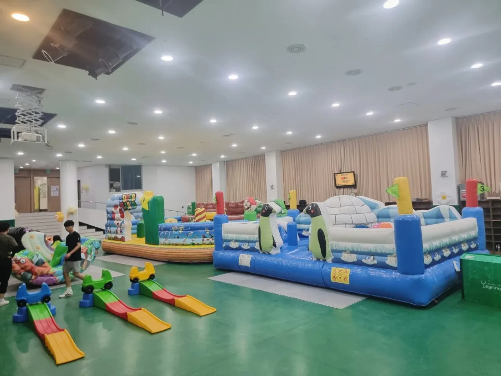
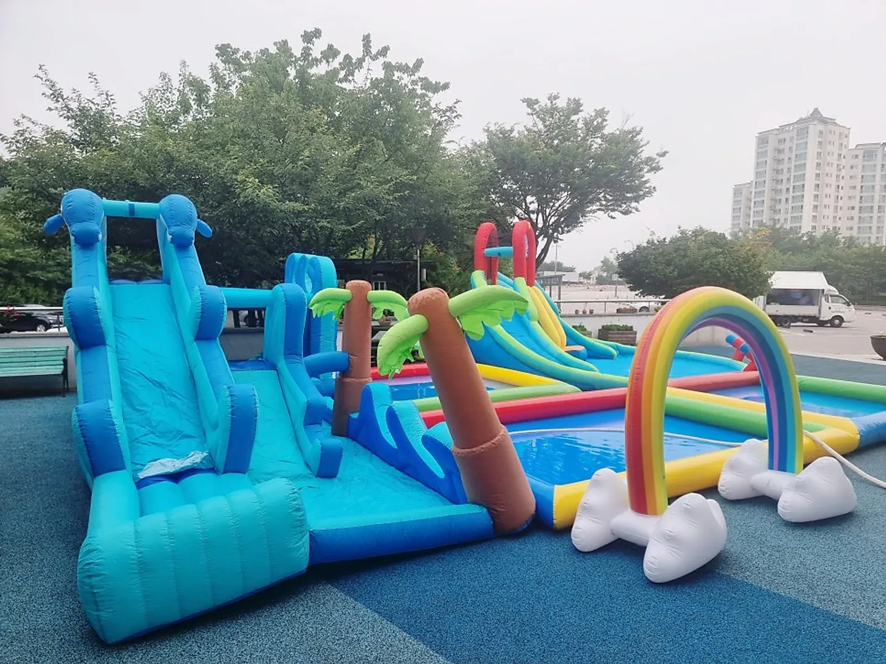

하남 에어바운스 대여는 기구를 고르기 전에 놓을 자리와 지켜볼 사람을 먼저 정하는 일입니다. 에어바운스는 송풍기로 공기를 계속 넣어 모양을 유지하는 기구라, 평평한 바닥과 전기, 바람 상태, 한 번에 들어가는 아이 수가 안전을 좌우합니다. 에어바운스는 「관광진흥법」상 유원시설의 유기기구로 관리된다는 점도 알아 두면 업체에 무엇을 물어야 할지 분명해집니다. 예그리나는 남양주 별내 사무실에서 하남시청까지 차로 약 25분 · 24.5km 거리입니다.

- 에어바운스는 평평하고 뾰족한 것이 없는 바닥에, 송풍기 전기를 쓸 수 있는 자리에 놓아야 합니다.
- 에어바운스는 「관광진흥법」상 유원시설의 유기기구로 관리되고, 크기에 따라 안전성검사 대상과 비대상으로 나뉩니다.
- 미니에어바운스 등은 2년마다 정기 확인검사를 받도록 제도가 바뀌었습니다.
- 바람이 강한 날에는 야외 에어바운스를 쓰지 않는 기준을 미리 정해 두세요.
- 기구마다 한 번에 들어가는 인원을 정하고 입구에 지켜보는 어른을 둡니다.
1. 하남 에어바운스 대여, 자리부터 정하기
에어바운스는 접어서 실어 오고 현장에서 송풍기로 부풀립니다. 그래서 놓을 자리의 조건이 맞지 않으면 기구를 가져와도 설치할 수 없습니다. 대여 문의 전에 아래 표를 채워 두세요.
| 확인할 것 | 기준 |
|---|---|
| 바닥 | 평평하고 돌 · 유리 조각 · 뾰족한 것이 없는 곳 |
| 크기 | 기구 크기보다 사방으로 여유가 있는 곳 |
| 전기 | 송풍기를 연결할 콘센트까지의 거리 |
| 머리 위 | 나뭇가지 · 전선 · 천장 조명이 닿지 않는 곳 |
| 차량 | 기구를 내릴 자리까지 차가 닿는지 |
실내라면 천장 높이와 출입문 폭이 먼저입니다. 야외라면 바닥 상태와 바람을 먼저 봅니다.

2. 에어바운스 안전 제도, 이것만 알아 두기
한국소비자원은 에어바운스가 「관광진흥법」상 유원시설의 유기기구로 관리되며, 크기에 따라 안전성검사 대상과 비대상으로 나뉜다고 설명합니다. 소비자원은 설치 · 관리 실태를 조사해 미흡하다고 알리기도 했습니다.
정부는 이후 안전성검사 대상이 아닌 유기기구 가운데 사고가 잦은 미니에어바운스 등은 2년마다 정기 확인검사를 받도록 했습니다. 대여 업체를 고를 때 빌리는 기구가 어떤 검사를 받았는지 물어볼 수 있습니다.
3. 바람과 날씨
야외 에어바운스는 바람에 약합니다. 공기로 부풀린 구조라 바람을 받으면 흔들리고, 고정이 약하면 움직일 수 있습니다. 행사 전날과 당일 아침 일기예보의 바람 세기를 확인하고, 어느 정도면 기구를 쓰지 않을지 기준을 미리 정해 두세요.
- 바람이 강해지면 아이들을 먼저 기구 밖으로 내보내고 이용을 멈춥니다.
- 비가 오면 바닥이 미끄러워지니 야외 이용을 멈추거나 실내로 옮깁니다.
- 햇볕이 강한 날에는 기구 표면이 뜨거워질 수 있어 쉬는 시간을 둡니다.
- 실내로 옮길 공간을 미리 알아 두면 결정이 빨라집니다.

4. 이용 규칙 — 인원 · 연령 · 지켜보는 사람
| 규칙 | 이유 |
|---|---|
| 한 번에 들어가는 인원 정하기 | 많이 들어가면 서로 부딪힙니다 |
| 연령별로 시간 나누기 | 큰 아이와 어린 아이가 섞이면 어린 아이가 다치기 쉽습니다 |
| 신발 · 안경 · 날카로운 장신구 벗기 | 기구와 아이 모두를 보호합니다 |
| 입구에 어른 한 명 | 인원과 순서를 지키게 합니다 |
| 음식 들고 들어가지 않기 | 미끄러짐과 기구 오염을 막습니다 |
인원 기준은 기구 크기와 아이 연령에 따라 다릅니다. 원 · 학교 · 교회의 안전 기준이 있다면 그것을 먼저 따르고, 상담에서 기구에 맞는 이용 방법을 함께 정합니다.
5. 하남에서 예약할 때
예그리나 별내 사무실에서 하남시청까지는 차로 약 25분 · 24.5km(막히지 않을 때)입니다. 행사장이 시내 어디든(미사 · 위례 · 감일 · 덕풍동 · 신장동 · 풍산동 등) 설치 시간을 넉넉히 잡고 행사 시작 전에 세팅을 마칩니다. 하남 안내는 하남 행사 안내에 있습니다.
놀이기구 렌탈은 한 달 전부터 예약할 수 있습니다. 자동 견적서에서 에어바운스(송풍기 포함), 실내놀이터 구성, 운반 · 설치 · 철수를 골라 보내 주세요. 자동 견적서는 금액을 보여 주지 않으며, 비용은 상담 후 안내합니다. 실내 행사라면 노원 실내놀이터 대여 — 공간 나누는 법도 함께 보세요.
자주 묻는 질문
에어바운스에 전기가 꼭 필요한가요?
네. 송풍기로 공기를 계속 넣어야 모양이 유지됩니다. 콘센트 위치와 기구 놓을 자리까지의 거리를 알려 주세요.
에어바운스는 검사를 받아야 하나요?
한국소비자원 자료에 따르면 에어바운스는 「관광진흥법」상 유원시설의 유기기구로 관리되고 크기에 따라 안전성검사 대상과 비대상으로 나뉩니다. 미니에어바운스 등은 2년마다 정기 확인검사를 받도록 했습니다. 자세한 기준은 공식 안내를 확인해 주세요.
아이들을 지켜보는 사람은 누가 맡나요?
기구 입구에 서 있을 어른을 원 · 학교 · 교회와 상담에서 함께 정합니다. 진행 선생님 · 스태프가 더 필요한지도 그때 확인합니다.
에어바운스는 언제까지 예약해야 하나요?
놀이기구 렌탈은 한 달 전부터 예약할 수 있습니다. 운동회가 몰리는 봄 · 가을에는 날짜를 먼저 잡아 두시는 편이 좋습니다.